|
|
HELP FIND THE FOLLOWING LOCATIONS
PAGE 34
THE CHAMPIONS: Autokill (Roy Ward Baker: Early 1968)
Unknown 1:
After Klein chats with Brading as they are driven through Geneve to Nemesis HQ Arabic numerals on numberplates and radar equipment suggest an airport approach road.
Arabic numerals on numberplates and radar equipment suggest an airport approach road.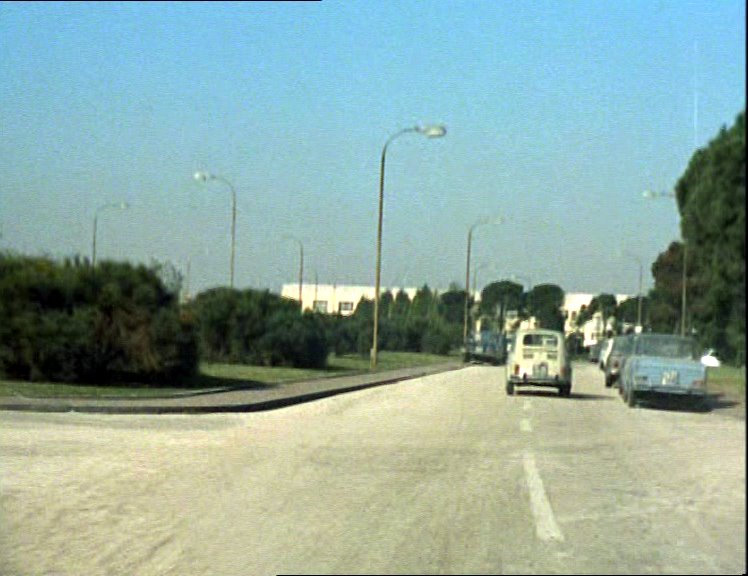
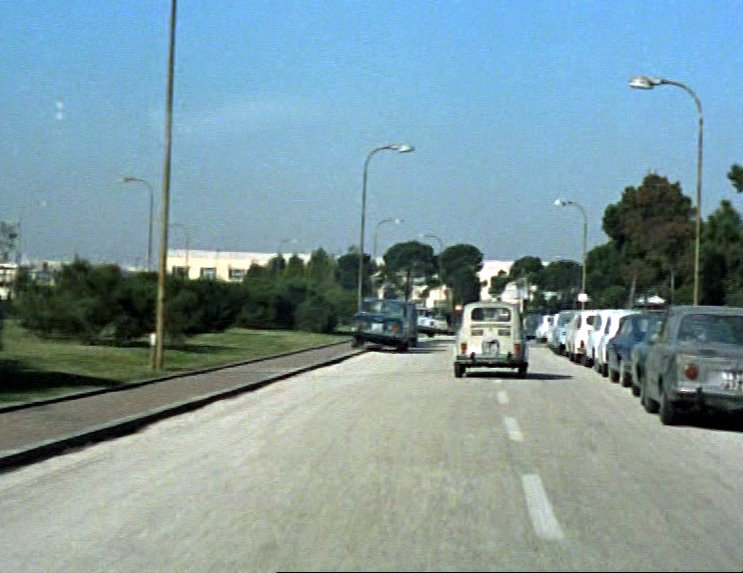
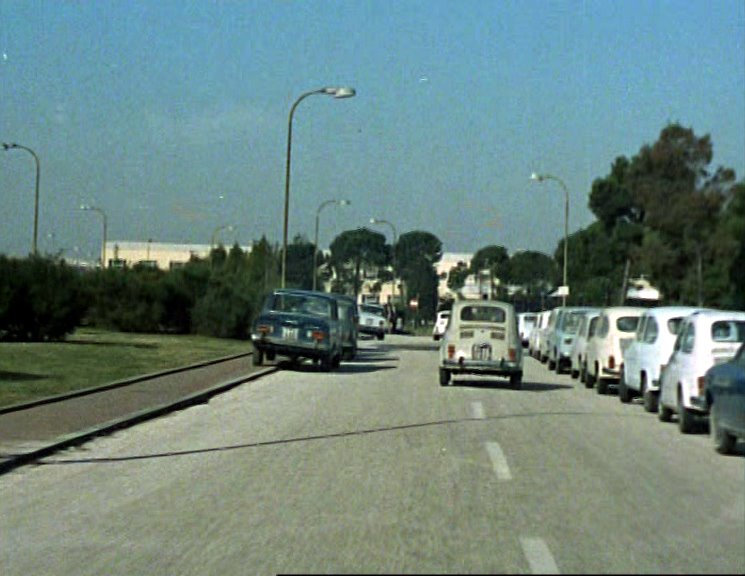
Geneva, SwitzerlandEstablishing shots of Geneva (The paddle steamer Montreux approaching the jetty with four trees, on the eastern side of the bay off Quai Gustave-Ador).
(Details from Micheal Richardson)
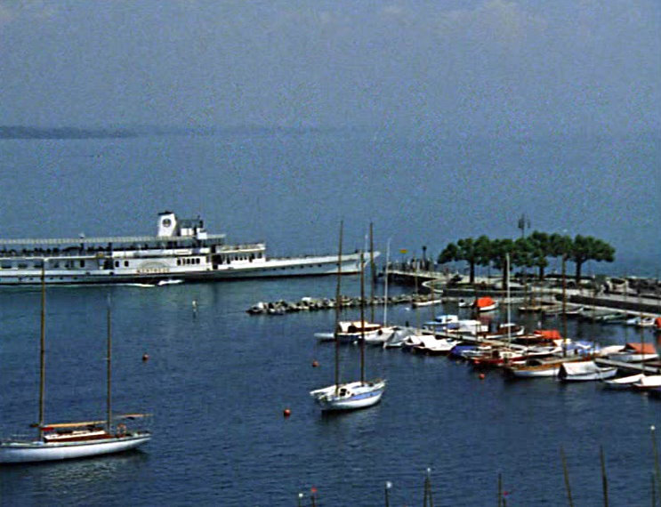
Establishing shots of Geneva (The Hotel De La Paix, Quai du Mont-Blanc/Rue des Alpes).
(Details from Micheal Richardson)
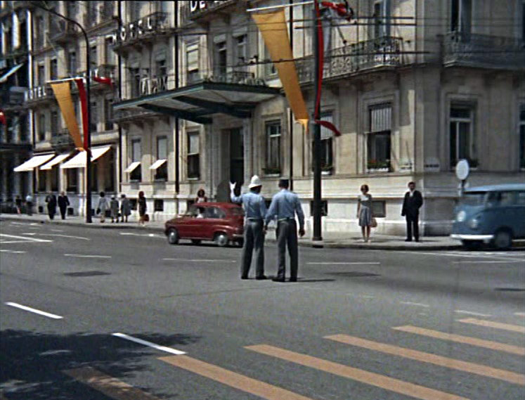
Establishing shots of Geneva (Brunswick Monument, Quai du Mont-Blanc).
(Details from Micheal Richardson)
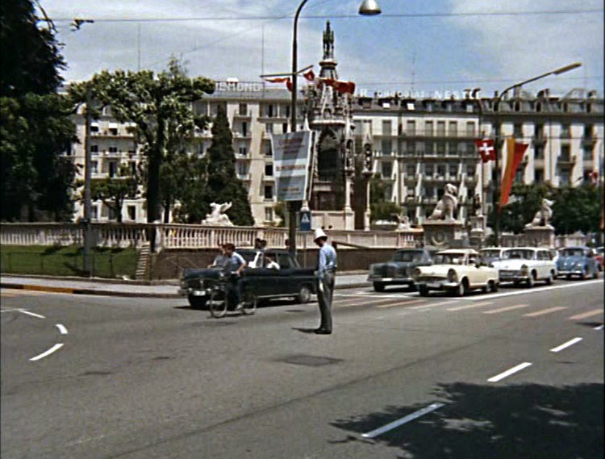
THE CHAMPIONS: Full Circle
(John Gilling: September/October 1967)
Unknown 1:


THE CHAMPIONS: Shadow of the
Panther (Freddie Francis: Late 1967)
Iglesia de San José, Plaza
de San Jose, San
Jose, Puerto Rico:
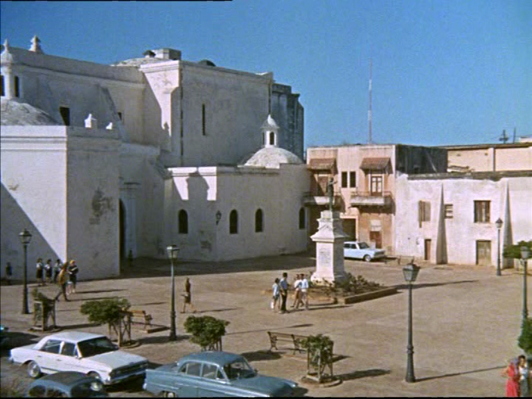
Port Pierre Canto, Bd de
la Croisette, Cannes, France
(Identified by Michael Richarson, September 2022)

Establishing footage at 3.04 for Haiti, but its actually Dronningens Gade, Charlotte Amalie on the US Virgin Islands.
(Identified by Michael Richarson, September 2022)

Saint Moritz, Switzerland

The Bank of Jamaica and
Barclays Bank on the junction of King Street and Barry Street,
Kigston, Jamaica
(Identified by Michael Richarson, August 2022)


(Identified by Michael Richarson, August 2022)

Craig, Sharron and Richard in front of the old Terminal 2 leaving the airport having arrived from Geneva and 30.20. Newman, Vanessa and Coates arrive in what appears to be the same car, only filmed from behind to give the impression of another vehicle, heading towards the Queens Building that was beside Terminal 2.
(Identified by Michael Richarson, August 2022)

THE CHAMPIONS: The Search
(Leslie Norman: April 1967)
Establishing shot of submarines docked at night (River Medway, Strood).
(Identified by Michael Richardson, March 2022)
THE CHAMPIONS: Tweleve Hours
(Robert Asher: Late 1967)
Loch Trannoch - H.M.S Wetherby (H.M.S Artemis)
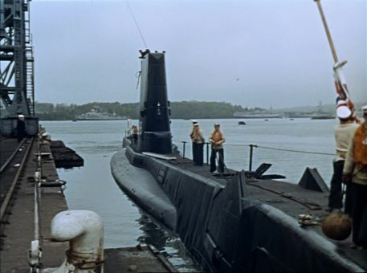
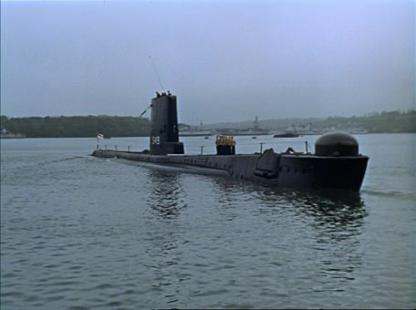
Unknown 1
THE CHAMPIONS: Tweleve Hours (Robert Asher: Late 1967)
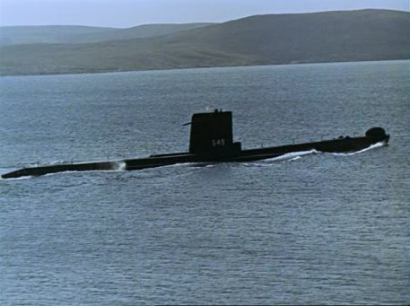
Galsgow, River Clyde
THE CHAMPIONS: The Silent Enemy (Robert Asher: April 1967)
NATO Submarine base (River Clyde)
(Spotted by Michael Richardson, March 2022)
THE CHAMPIONS: Tweleve Hours (Robert Asher: Late 1967)
NATO Submarine base (River Clyde)
(Spotted by Michael Richardson, March 2022)
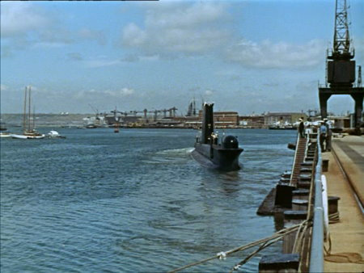
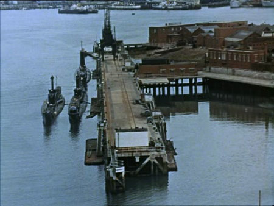
THE CHAMPIONS: The Final Countdown (John Gilling: Early 1968)
Civic Centre on Bricket
Road in St Albans: A German pilot is kidnapped by as he
leave his Hamburg flat.
(Identified by Geoff
Dodd, April 2022)
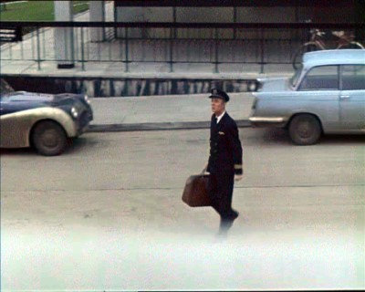
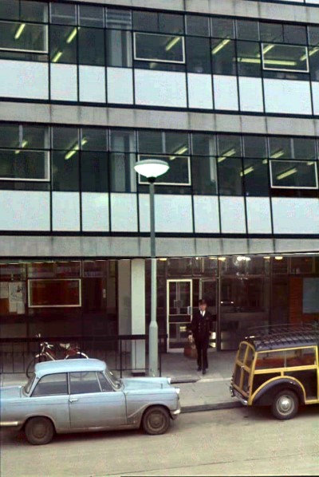
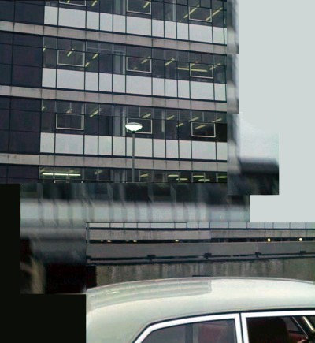
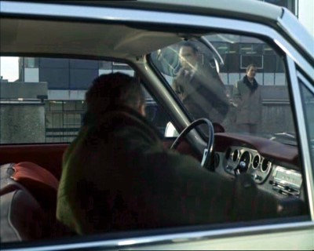
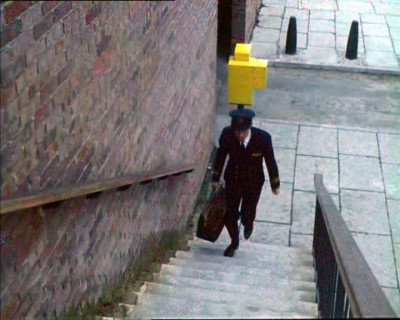
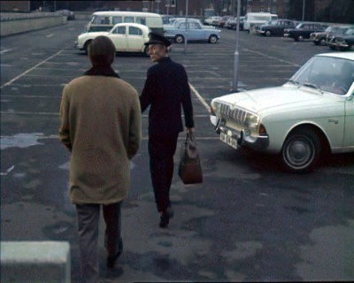
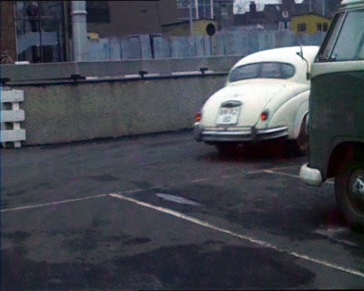
Think you know a spot? Need a bigger image? Email me.
< Previous | Index | Avengerland | Next >
Copyright © 2022 Anthony R. McKay